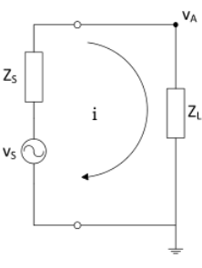
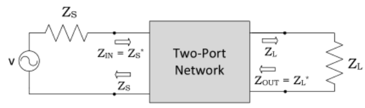
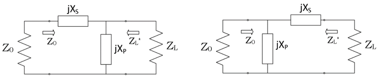
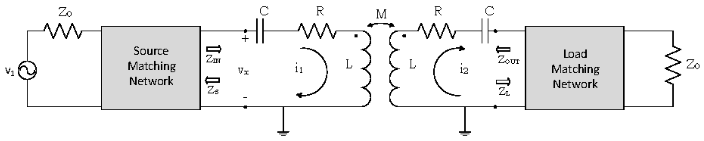
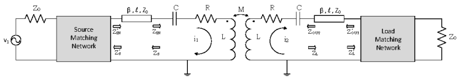

Impedance-Matched Networks
Topics
Lumped element matching circuits
Frequency-tuned, wireless non-radiative power transfer systems
Lighting up a light-emitting diode (LED) using a WNPT system
Use frequency tuning to maintain the brightness of the LED
Complex-Conjugate Matching
Given
\[\begin{split}
\begin{align*}
Z_S &= R_S + jX_S \\[0.5em]
Z_L &= R_L + jX_L
\end{align*}
\end{split}\]

Fig. 34 Reference Circuit
Voltage and current across load \(Z_L\) is defined as
\[\begin{split}
\begin{align*}
v_A &= v_S \dfrac{Z_L}{Z_S + Z_L} \\[0.5em]
i &= \dfrac{v_S}{Z_S + Z_L}
\end{align*}
\end{split}\]
Power \(P_D\) delivered to load \(Z_L\) is
\[\begin{split}
\begin{align*}
P_D = \dfrac{1}{2} Re\{v_A i^* \} &= \dfrac{|v_S|^2}{2} \dfrac{Re\{Z_L \}}{|Z_S + Z_L|^2} \\[0.5em]
&= \dfrac{|v_S|^2}{2} \dfrac{R_L}{(R_S+R_L)^2 + (X_S + X_L)^2}
\end{align*}
\end{split}\]
Analyzing the power relation, it is shown that maximum power transfer occurs when \(Z_S = Z_L^*\) .

Fig. 35 Impedance Matched, Two Port Network
Matching Network Topologies
Lumped element matching networks are chosen for this design since the resonating frequencies are less than 100 MHz. Other solutions are obtained with transmission line models, however it is difficult to design reasonably sized lines and stubs due to the operating frequencies. Set input impedance \(Z_S = Z_0\) and find the matching network for load \(Z_L = R_L + jX_L\) .

Fig. 36 Left: Load-Parallel-Series; Right: Load-Series-Parallel
Lump Element: Load-Parallel-Series
\[\begin{split}
\begin{align*}
X_s &= -Xp + \dfrac{X_L Z_0}{R_L} + \dfrac{X_p Z_0}{R_L} \\[0.5em]
X_p &= -\dfrac{R_L^2 + X_L^2}{X_L \pm \sqrt{R_L/Z_0}\sqrt{R_L^2 + X_L^2 - Z_0 R_L}}
\end{align*}
\end{split}\]
Solution Conditions
\[\begin{split}
\begin{align*}
Re\{{\dfrac{1}{Z_L}}\} < \dfrac{1}{Z_0} \\[0.5em]
\dfrac{R_L}{R_L^2 + X_L^2} < \dfrac{1}{Z_0} \\[0.5em]
R_L^2 + X_L^2 - Z_0 R_L > 0
\end{align*}
\end{split}\]
Lump Element: Load-Series-Parallel
\[\begin{split}
\begin{align*}
X_s &= \sqrt{R_L(Z_0 - R_L)} - X_L & \ &
X_p = -\dfrac{\sqrt{R_L}Z_0}{\sqrt{Z_0-R_L}} \\
X_s &= -\sqrt{R_L(Z_0 - R_L)} - X_L & \ &
X_p = \dfrac{\sqrt{R_L}Z_0}{\sqrt{Z_0-R_L}}
\end{align*}
\end{split}\]
Simultaneous Matching

Fig. 37 Coupled Shielded-Loop Resonators with Matching Networks
Inductively-coupled RLC circuits assuming identical loops
\[\begin{split}
\begin{align*}
Z_{in} &= R + j\bigg(\omega L - \dfrac{1}{\omega C} \bigg) + \dfrac{(\omega M)^2}{R + Z_L + j\bigg(\omega L - \dfrac{1}{\omega C} \bigg)} \\[0.5em]
Z_{out} &= R + j\bigg(\omega L - \dfrac{1}{\omega C} \bigg) + \dfrac{(\omega M)^2}{R + Z_S + j\bigg(\omega L - \dfrac{1}{\omega C} \bigg)}
\end{align*}
\end{split}\]
For a simultaneous, complex-conjugate match, we must ensure that
\[\begin{split}
\begin{align*}
Z_S &= Z_{in}^* \\[0.5em]
Z_L &= Z_{out}^*
\end{align*}
\end{split}\]
Then the simulataneous matching is satisfied by
\[
\begin{align*}
Z_{L}^{OPT} = Z_{S}^{OPT} = j\bigg(\omega L - \dfrac{1}{\omega C}\bigg) + \sqrt{R^2 + (\omega M)^2}
\end{align*}
\]

Fig. 38 Including Feedline Effects
Factoring in feedline effects, the adjusted source and load impedance become
\[\begin{split}
\begin{align*}
Z_{S}^{'} &= Z_0 \dfrac{Z_S - j Z_0 \tan(\beta l)}{Z_0 - j Z_S \tan(\beta l)} \\[0.5em]
Z_{L}^{'} &= Z_0 \dfrac{Z_L - j Z_0 \tan(\beta l)}{Z_0 - j Z_L \tan(\beta l)}
\end{align*}
\end{split}\]
Then the simulataneous matching is satisfied by
\[
\begin{align*}
Z_{L}^{OPT} = Z_{S}^{OPT} = Z_0 \dfrac{j\bigg(\omega L - \dfrac{1}{\omega C}\bigg) + \sqrt{R^2 + (\omega M)^2} - j Z_0 \tan(\beta l)}{Z_0 - j\bigg[j\bigg(\omega L - \dfrac{1}{\omega C}\bigg) + \sqrt{R^2 + (\omega M)^2}\bigg]\tan(\beta l)}
\end{align*}
\]
At resonant frequency this simplifies to
\[
\begin{align*}
Z_{L}^{OPT}(\omega_0) = Z_{S}^{OPT}(\omega_0) = Z_0 \dfrac{\sqrt{R^2 + (\omega_0 M)^2} - j Z_0 \tan(\beta l)}{Z_0 - j\sqrt{R^2 + (\omega_0 M)^2} \tan(\beta l)}
\end{align*}
\]
Calculate
Assuming coupling distance of 5cm, determine
mutual inductance \(M\)
\(R,L,C\) of the shielded resonator loop
\(Z_S = Z_L\)
\(Z_S^{*} = Z_L^{*}\)
Matching network lump elements
If the system is mismatched, incident power from the source gets refected back and is measured via return loss.
\[\text{Return Loss} = -20\log_{10}|\Gamma|\]
Maximum Power Transfer Efficiency
Recall the power transfer efficiency for a system operating at resonant frequency \(\omega_0\) is
\[\eta = \dfrac{4R_L^2(\omega_0 M)^2}{\bigg((R+R_L)^2 + (\omega_0 M)^2\bigg)^2}\]
Examining the impedance-matched system for magnetically coupled loops, we see it only satisfies the weak coupling condition. (for \(R \neq 0\) )
\[\begin{split}
\begin{align*}
R_L^{OPT} = Re\{Z_{L}^{OPT}\} = \sqrt{R^2 + (\omega M)^2} > \omega M \\[0.5em]
\end{align*}
\end{split}\]
Thus, subsituting in \(R_L^{OPT}\) , the maximum possible power transfer efficiency for a system at resonant frequency \(\omega_0\) is
\[\eta = \dfrac{4\bigg(R^2 + (\omega M)^2\bigg)^2(\omega_0 M)^2}{\bigg(\bigg(R+\sqrt{R^2 + (\omega M)^2}\bigg)^2 + (\omega_0 M)^2\bigg)^2}\]
{kind=link}